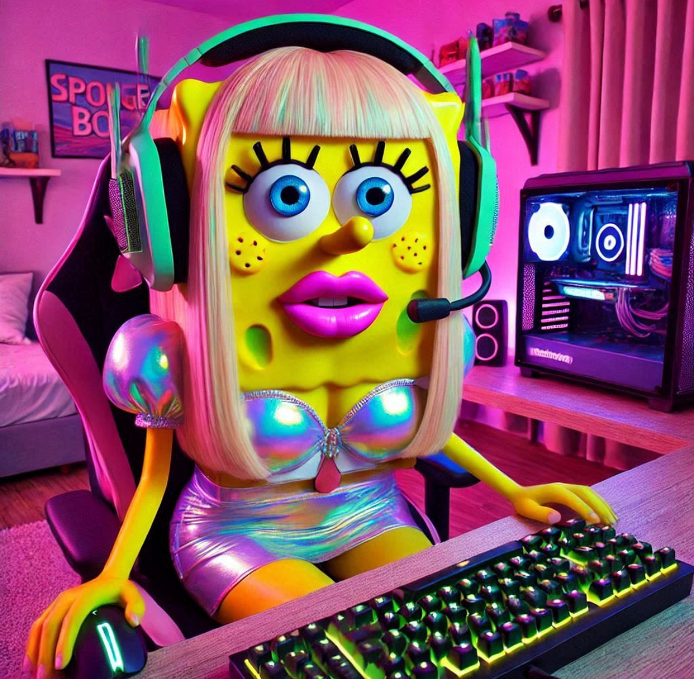

Merhaba, Sürtük Bob

Bikini Bottom'a gelen yeni internet altyapısını beğendin mi?
Patrick denen kahrolası ucuz orospu -o sürtük sanki hiç parası yokmuş gibi- bakır kabloları satmak için kopardığında bütün Bikini Bottom'ın internetini keseceğinden haberi yoktu.
Dün Kancık Yengeç'in restoranının yanında açılan, Bikini Telekom adında şüpheli internet sağlayıcısı, bugün kendi kablolarıyla yeni altyapı kurdu.
Şimdi, Bikini Bottom'ın interneti, Kancık Yengeç'in restoranının yanındaki Bikini Telekom'un kablolarıyla sağlanıyor.
Şu anlık her şey düzgün görünüyor; suyun altında bir ananasta yaşadığını düşünürsek, 186 MBps internet hızı gayet iyi bir sayı.
Ama 6. Lubune hislerin bir terslik olduğunu söylüyor. Tersliğin kaynağını bulmak için nereden başlamalısın?
Modeme reset at |
Bikini Telekom Müşteri Hizmetlerini ara